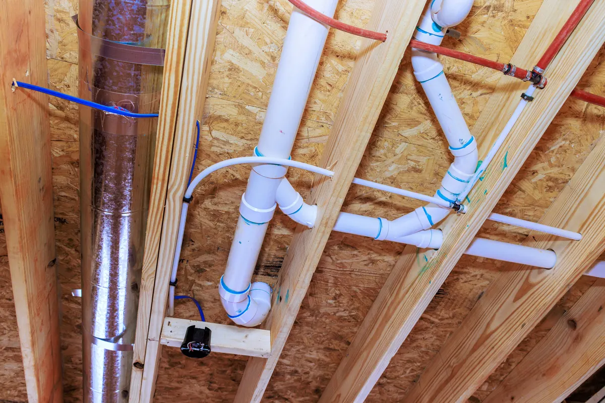

When structural disaster strikes - whether from fire, storm damage, high winds, falling debris, or major impact - the visible damage is only part of the problem. Behind walls, above ceilings, and beneath floors, your plumbing system may have been compromised in ways that are not immediately obvious. That is why pressure testing all plumbing systems after a structural disaster is so important.

At Angle Stop Plumbing, we know that restoring a property is not just about what you can see. It is about making sure critical systems are still safe, sealed, and working as they should before life or business returns to normal.
Structural damage can affect plumbing in hidden ways
After a fire or severe storm, plumbing lines may shift, crack, separate, weaken, or lose integrity. Even if pipes look intact from the outside, the structure surrounding them may have moved enough to create stress on fittings, joints, valves, and connections.
Common causes of post-disaster plumbing damage include:
- Foundation shifting, which can place strain on underground and in-wall piping
- Falling materials or debris, which may crush or crack exposed lines
- Extreme heat from a fire, which can warp, weaken, or damage certain pipe materials and seals
- High winds or structural movement, which can loosen plumbing connections
- Water intrusion, which may expose existing weak points or create new failures
A damaged plumbing system may not fail right away. In many cases, the real problem appears later - after repairs begin, water service is restored, or the building is reoccupied.
Pressure testing helps identify leaks before they become costly disasters
A plumbing pressure test helps confirm whether the system is holding properly or if there are leaks, weak points, or damaged sections that need attention. This step is critical after structural damage because it allows issues to be discovered before they turn into major water loss, mold growth, material damage, or operational downtime.
Without pressure testing, a property owner could restore walls, flooring, cabinetry, or ceilings only to later find out a hidden leak was left behind. That can mean paying twice for repairs and dealing with delays that could have been avoided.
It protects both homes and businesses
For homeowners, pressure testing offers peace of mind that the home is truly safe to move back into. No one wants to complete major restoration work only to face hidden plumbing leaks weeks later.
For commercial properties, the stakes can be even higher. A hidden plumbing failure after reopening can interrupt operations, damage inventory, create unsafe conditions, and impact customer confidence. Restaurants, offices, retail buildings, and multi-unit facilities all rely on plumbing systems that must perform reliably after a disaster event.
Fire damage creates special risks for plumbing systems
Fire-damaged structures deserve especially careful plumbing evaluation. Heat can affect pipes, fittings, soldered joints, seals, and fixtures even when they are not directly consumed by flames. Materials may appear usable while actually being weakened or distorted.
In these situations, pressure testing helps verify whether the system still has the integrity needed for safe service. It is one of the smartest steps a property owner can take before beginning final reconstruction.
Storm damage can create unexpected plumbing failures
Storm damage often causes more plumbing risk than people realize. A building may experience roof failure, wall movement, flooding, fallen trees, shifting foundations, or impact from airborne debris. Any of these conditions can affect water lines, drain lines, gas piping supports, or plumbing fixtures.
A pressure test helps uncover whether the plumbing system was affected during the event, even if no leak is immediately visible.
Early testing can save time, money, and frustration
Pressure testing after a disaster is not just a precaution - it is a practical step that can save significant time and money during restoration. It helps:
- Catch hidden leaks early
- Prevent damage to newly restored areas
- Reduce the risk of mold and moisture issues
- Confirm whether repairs are needed before occupancy
- Support a safer, more complete recovery process
In short, it helps ensure that restoration is done right the first time.
Why professional evaluation matters
After a structural disaster, plumbing systems should not be assumed safe simply because water is not visibly pouring out. A professional evaluation gives property owners a clearer picture of the system's condition and helps guide the next steps for repair or restoration.
At Angle Stop Plumbing, we help property owners identify damage, test system integrity, and make sure plumbing systems are ready for reliable use after fire, storm, or structural impact.
Final thoughts
When disaster damages a structure, hidden plumbing issues can remain long after the debris is cleared. Pressure testing is one of the most important steps in protecting your property from further loss. It helps uncover hidden damage, prevents future leaks, and gives homeowners and business owners confidence that their plumbing system is ready for recovery.
If your property has experienced fire, storm, or structural damage, contact Angle Stop Plumbing to schedule a professional plumbing system evaluation and pressure test before restoration moves forward.